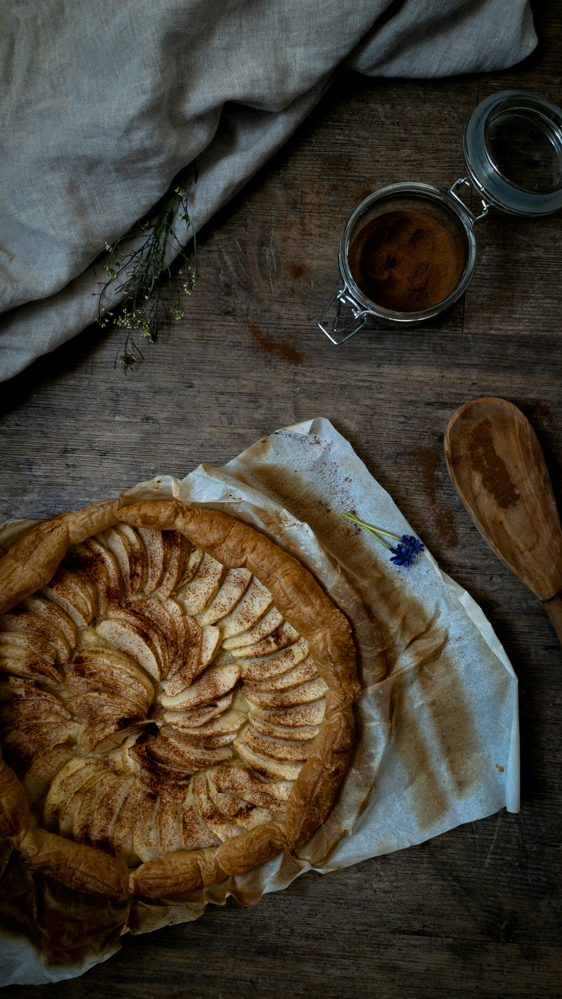

Home
Apple Galette

A fancy yet simple version of apple pie!
I created this recipe after being inspired by all the apples at Montréal's
Jean Talon market. Enjoy warm with a scoop of good quality vanilla ice
cream.
Ingredients
- 1 sheet puff pastry, rolled to 1/8-inch thickness
- 4 baking apples - peeled, cored, and cut into ⅓-inch thick slices
- 1 tablespoon freshly squeezed lemon juice
- 1/3 cup superfine sugar
- 2 tbsp cornstarch
- 1 tsp ground cinnamon
- 1/4 tsp ground nutmeg
- 1/8 teaspoon ground cloves
- 1 egg, well beaten
Steps
- Preheat the oven to 400 degrees F (200 degrees C).
- Lay puff pastry onto a round pizza pan.
-
Mix apples and lemon juice together in a bowl until evenly coated; add
sugar, cornstarch, cinnamon, nutmeg, and cloves. Toss to evenly coat
apples. Spread apple mixture into the center of the puff pastry and fold
edges of pastry toward the center. Brush the folded pastry edges with
about 1/2 the egg.
-
Refrigerate pastry-apple mixture for flavors and pastry to settle, about
10 minutes. Brush pastry with remaining 1/2 egg.
-
Place pan on the top rack of preheated oven and bake for 20 minutes.
Give galette a 1/4 turn and lower heat to 350 degrees F (175 degrees C).
Continue baking until pastry is lightly browned, 8 to 10 minutes. Cool
slightly before serving, about 10 minutes.